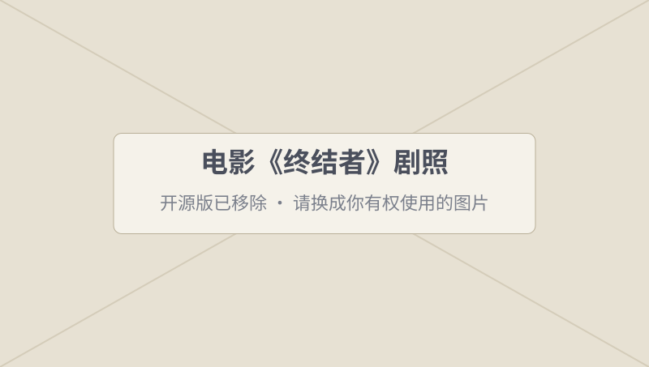
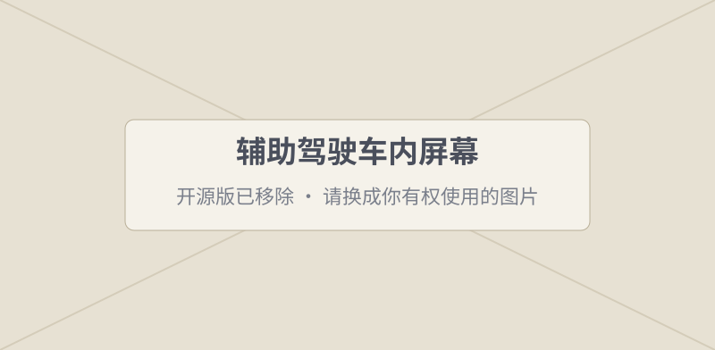
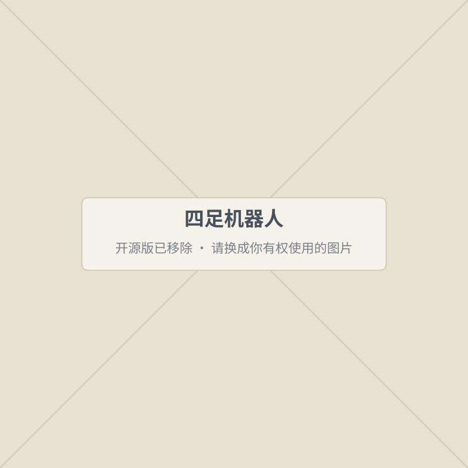
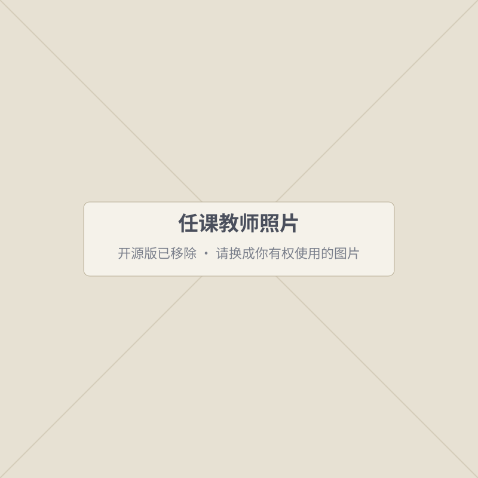
| 上课时间 | 待填写 |
|---|---|
| 上课地点 | 待填写 |
| 答疑时间 | 待填写 |
| 邮箱 | xingjunma@fudan.edu.cn |
| 办公室 | 江湾校区 交叉学科二号楼 D5025 请核对 |
| 个人主页 | xingjunma.com |
助教组长
邮箱
助教
邮箱
助教
邮箱
装软件遇到问题、作业提交、项目答疑，都可以在群里问。
人工智能概述 · 机器如何学习 · 模型怎样训练 · 神经网络与深度学习
定义问题与准备数据
计算机视觉 · 自然语言处理 · Transformer
迁移学习 · 大模型原理 · 用好大模型 · 智能体系统
AI 安全 · AI 伦理与治理
个人项目展示与答辩
输入一张叶子照片，输出它是哪种植物
输入一段评价，判断它是夸还是吐槽
两本教材供课后查阅。
课堂上可以用 AI 学习，但要声明和核验——实践课详细讲。
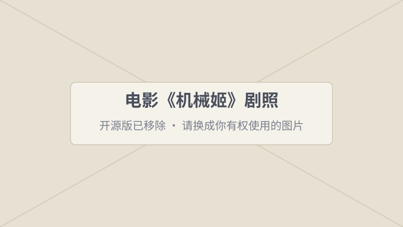
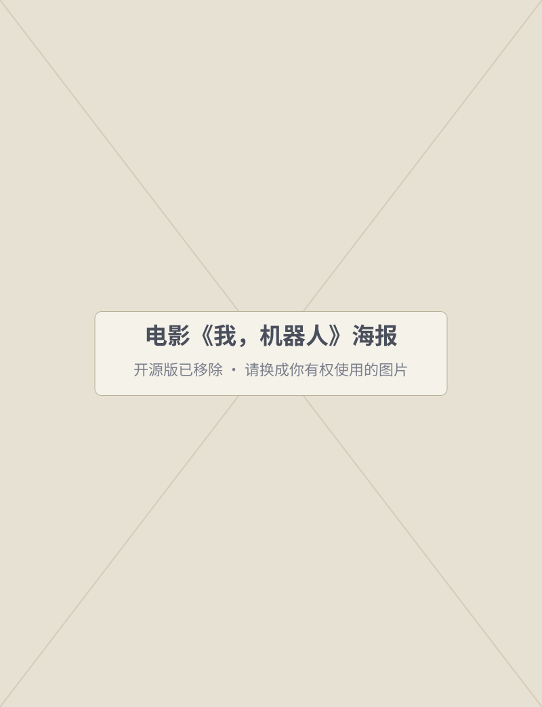
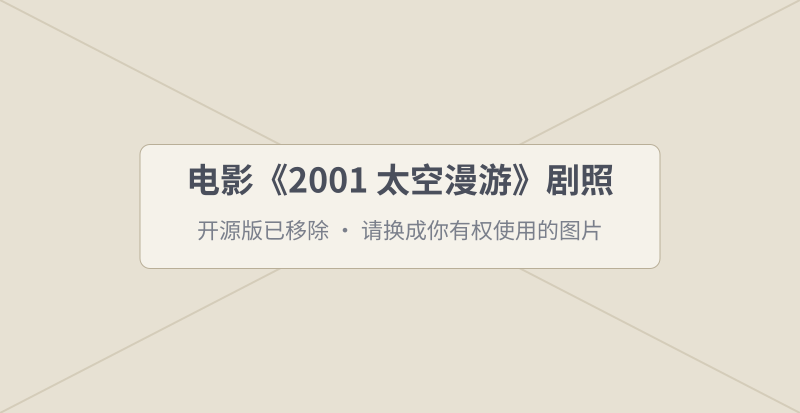
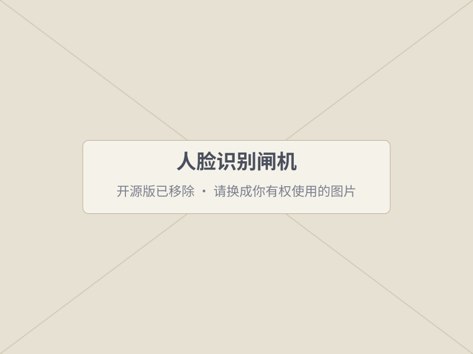
认出你是谁
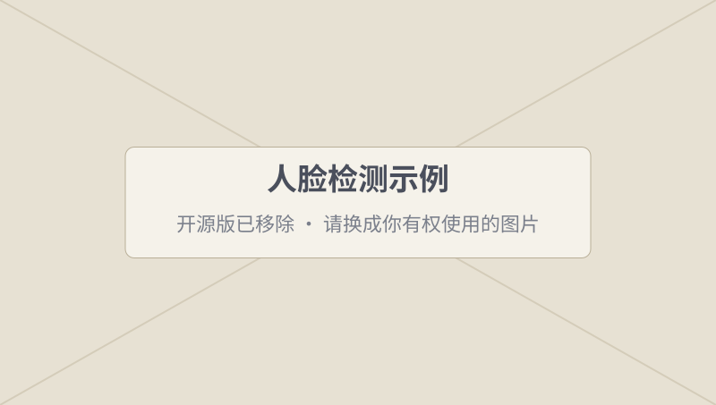
找到照片里的每张脸
预测路况，挑出更快的路
认出文字，再翻译
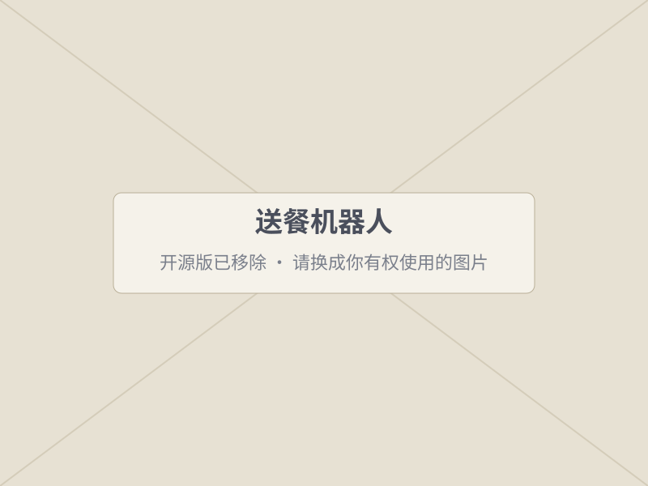
在餐厅里自己避开人和桌子
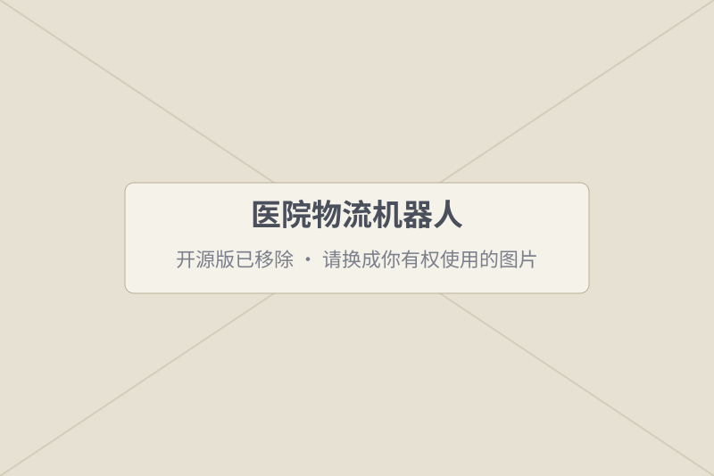
把药品送到病房
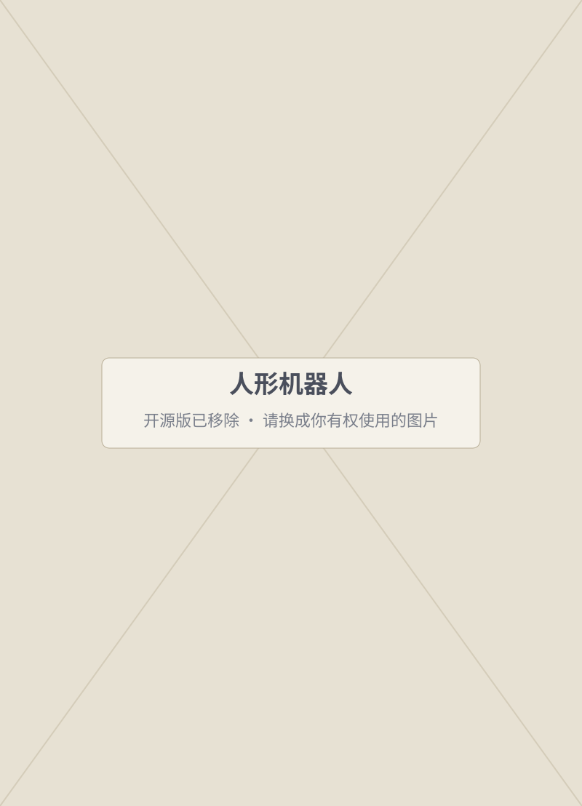
学会走路和保持平衡
自己判断怎么上台阶
它从你和千万用户的观看记录里学习你的偏好，预测你下一条想看什么。
它严格按人写好的固定规则计算，既不学习，也不感知环境。算得再快也不算“智能”。
找最短路线用的是经典的搜索算法；预测哪里会堵、几点到，靠的是从历史数据中学习。
普通感应门只是“有人靠近就开”的固定规则，通常不算。如果它用摄像头识别人、判断是不是要进门，就沾上 AI 了。
背后是大语言模型，从海量文字中学到语言规律，能理解问题并生成回答——但回答不一定对。
输入一句话就能画出新图片，属于生成式 AI。它画的是“没见过的新图”，不是从网上搜来的。
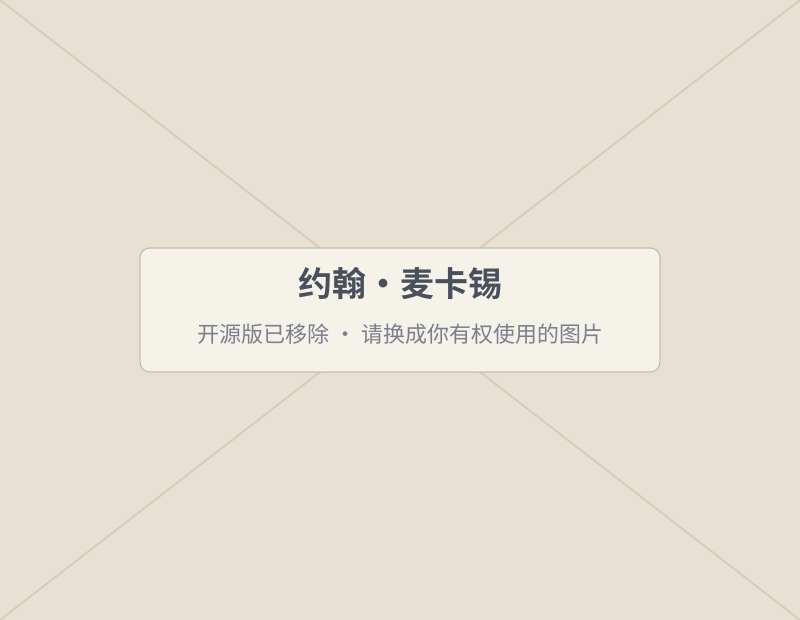
约翰·麦卡锡（John McCarthy）
“人工智能是制造智能机器，特别是智能计算机程序的科学与工程。”
麦卡锡，1955 年在会议提案中首次使用 Artificial Intelligence 一词
一个系统如果能做到下面的一件或几件事，我们通常就说它“有智能”：
看、听、读
从数据中总结规律
由已知推出未知
在选项中做选择
创造新的内容
它不需要长得像人，也不需要有意识或情感。
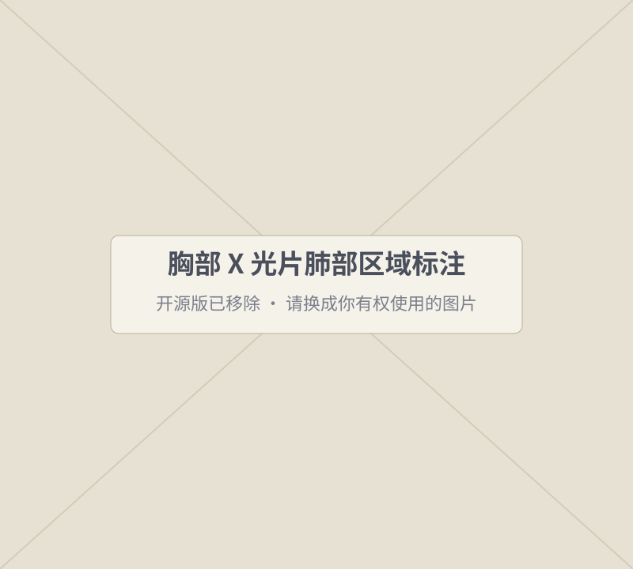
认出图片里的人、物和病灶区域
语音转文字、语音助手、实时字幕
翻译、摘要、写作、解释代码
天气、交通、销量、你接下来想看什么
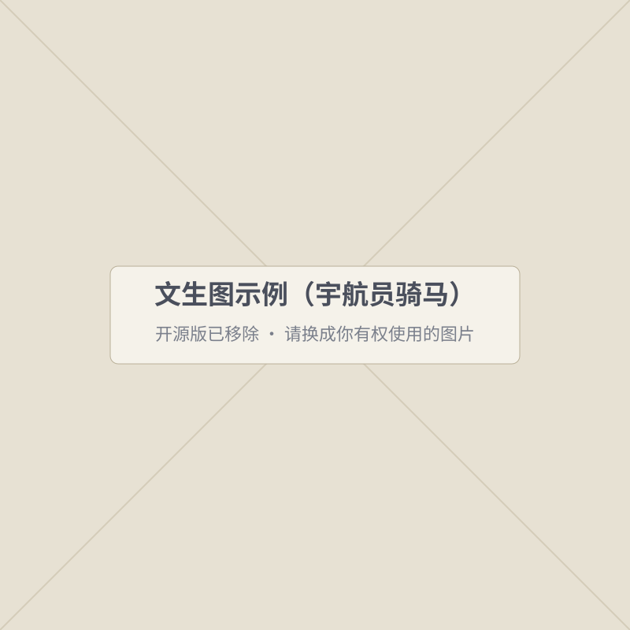
按一句话画图、写文章、写代码
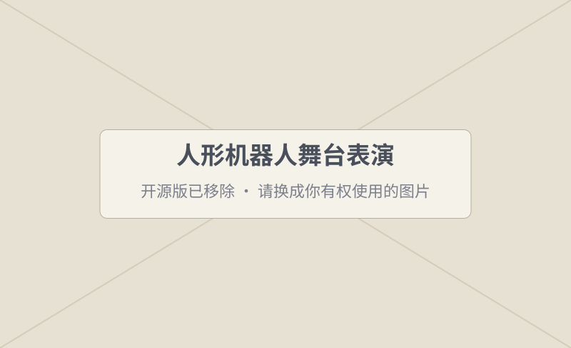
机器人行走、抓取，自动驾驶
围棋下赢世界冠军，但不会下象棋，更不会聊天
能做很多语言任务，范围广得多，但仍会犯错
像人一样胜任几乎所有任务。仍是研究目标，是否、何时实现存在争论
规则清楚的问题，这样做又准又快。
猫长什么样，很难用规则写清楚；但给它看一万张标好“猫/狗”的照片，它能自己学会分辨。
“重于 140 克的就是橙子”——规则写死，不会变
看离它最近的 3 个已知样本，多数是什么就判成什么
教学简化示意：只用“重量”和“颜色”两个特征，数据为虚构，不代表真实的水果识别模型。
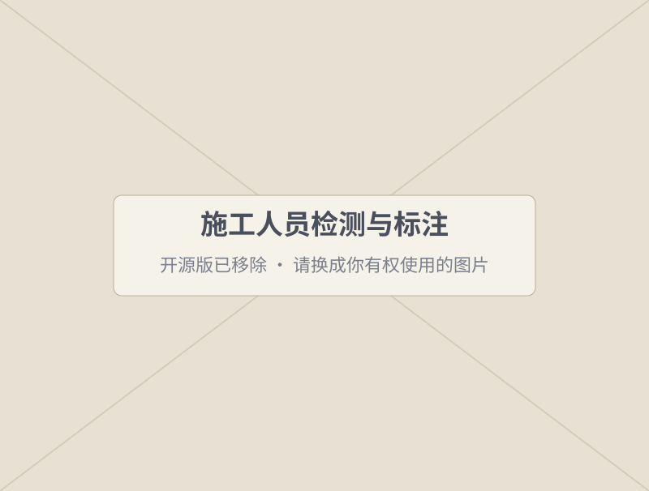
大语言模型怎么“写”出回答？——一次猜一个最可能的下一个词（第 7、10 周详讲）
概率为示意数字。
1. 下面哪个最像“机器学习”？
机器学习的核心是“从数据中学到规律”，规则不是人写死的。
2. AI、机器学习、深度学习的关系，哪个说法对？
范围从大到小：人工智能 ⊃ 机器学习 ⊃ 深度学习。
3. 输入“一只戴帽子的猫”，输出一张新图片，这属于？
它创造了原本不存在的新内容，是生成式 AI。
4. 关于通用人工智能（AGI），哪个说法最恰当？
保持开放和审慎：它是研究目标，不是既成事实。
下一节：AI 是怎么一步步走到今天的？为什么最近突然变得这么厉害？